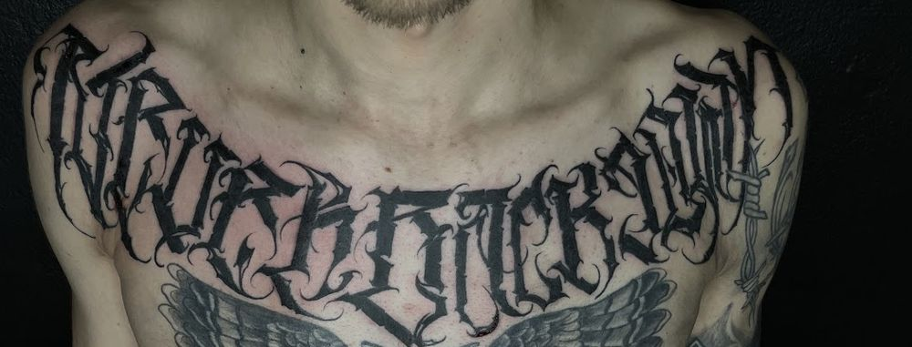
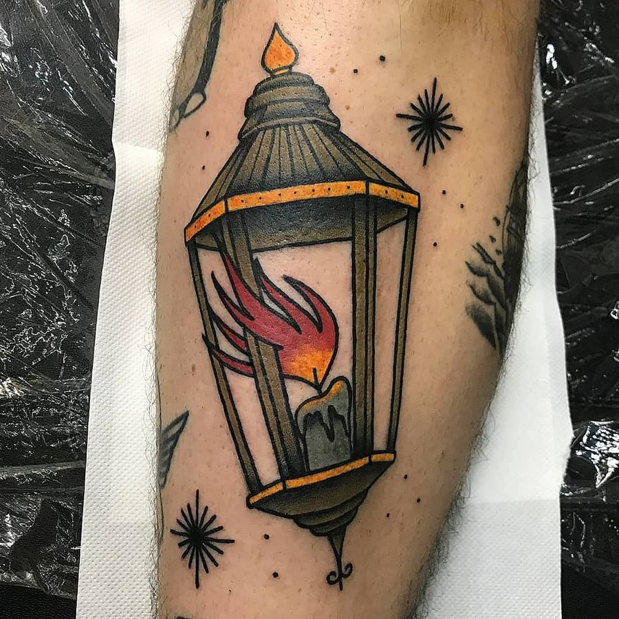

Needle Tattoo
Tetovací studio v Žižkově, Hartigova 60. Zlacený strop, černý mramor, práce od jemné linky po blackwork.
4,9 z 274 hodnocení na Googlu
Jen na objednání


Blackwork

Písmo

Jemná linka

Neo-traditional

Barevné

Patchwork

Black & grey
„Strašně příjemný kluci, co rozumí tomu, co dělají. Čistý prostředí, poradí vám, udělá to přesně tak, jak chcete.“ Adam, Google
Co o studiu píšou
„Byl jsem u něj už několikrát, i v různých studiích, ale musím říct, že v Needle Tattoo je to opravdu TOP! Děkuji za nádherný rukáv a také děkuji týmu Needle Tattoo za skvělou atmosféru.“
Maris
„Hned při vstupu jsem se zde cítila jako doma, protože se nám dostalo opravdu milého a přátelského přístupu.“
Tereza
„Nějakých 4,5 hodiny tetování uteklo jak voda, cením osobní přístup tatéra, domluvu, výsledek vynikající.“
Jan
4,9 ze všech 274 hodnocení. Přečíst je na mapě
Než přijdete
Do studia se chodí na objednání. Zavolejte a řekněte, co máte v hlavě.
725 734 400„Nabídnou kafe, Red Bull, vždycky ochotně poradí s placementem, aftercare, čímkoliv.“ Matěj
- Objednání
- Musíte být objednaní.
- Platba
- Platební i debetní karty.
- Přístup
- Bezbariérový vstup i parkování.
- Wi-Fi
- Zdarma.